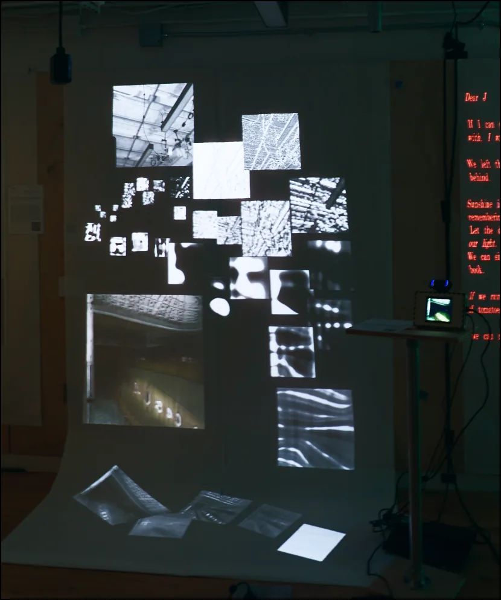
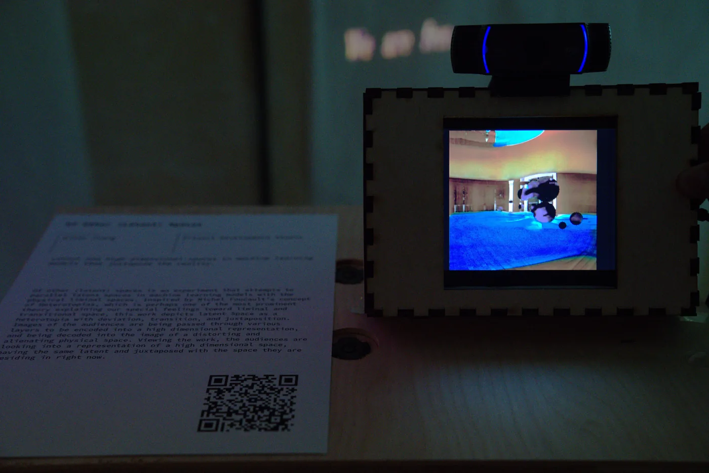
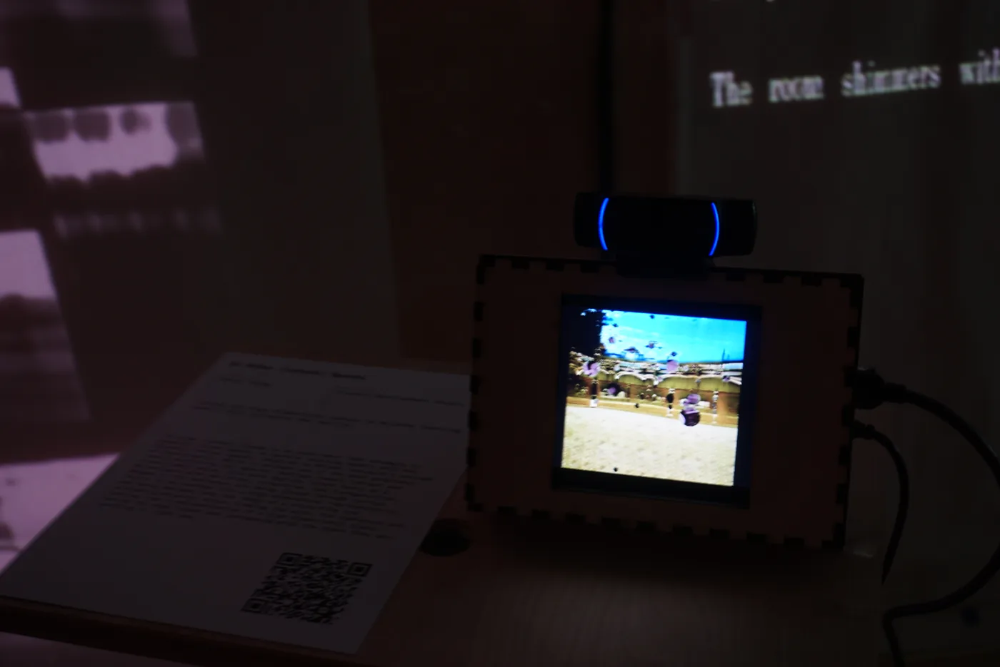
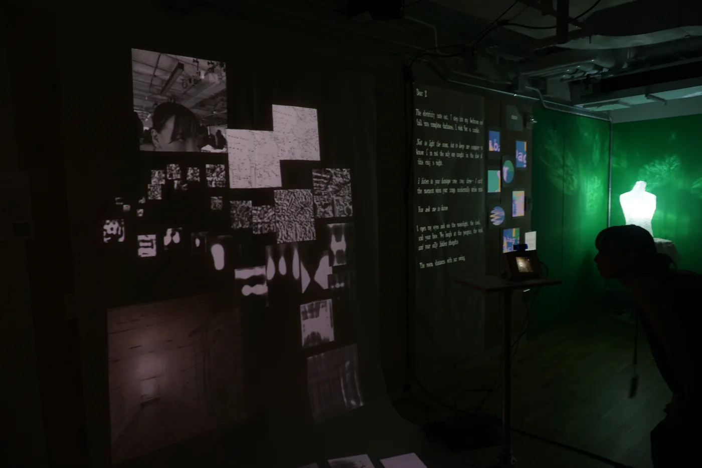
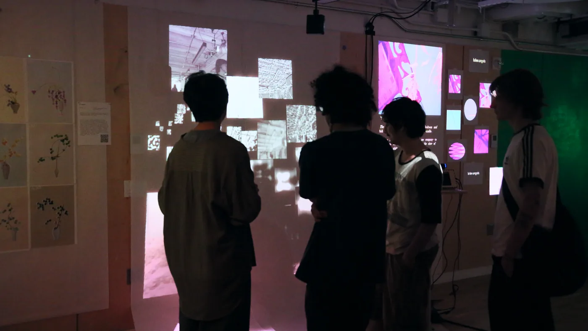
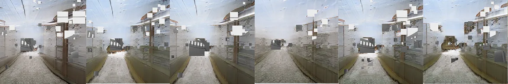
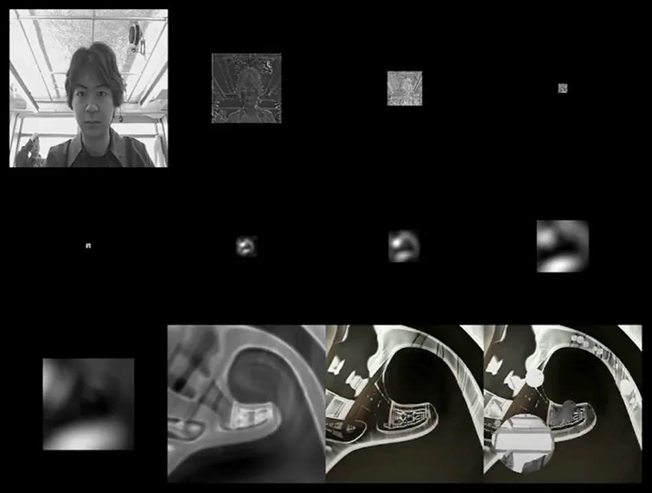
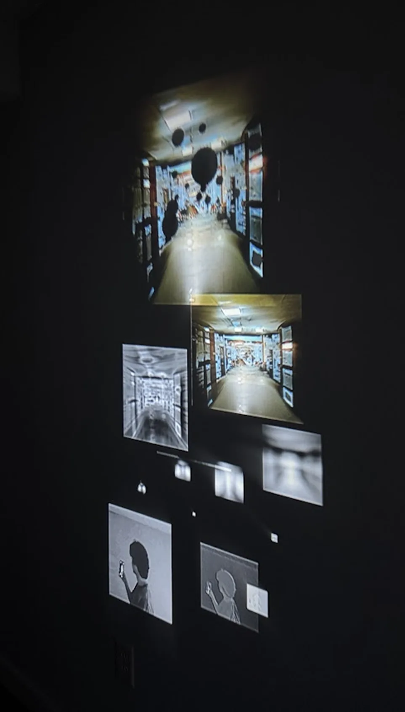

The Parallel
Of Other (latent) Spaces is programmed using Python for imagery generation. Each square projected on the wall represents a layer in the neural network. MobileNet V3, a general-purpose image model, encodes the webcam input into a latent representation. Then StyleGAN3, a generative model, uses this representation to generate an image of a liminal space. Even though there is no direct visual resemblance between the two images, they are aligned in a high-dimensional space inside the learning model. This results in a visually reactive effect: a change in the input yields a change in the output, and the rate of change is equivalent across both images.



The output for each layer is extracted using PyTorch, arranged in MadMapper, and projected onto the wall.